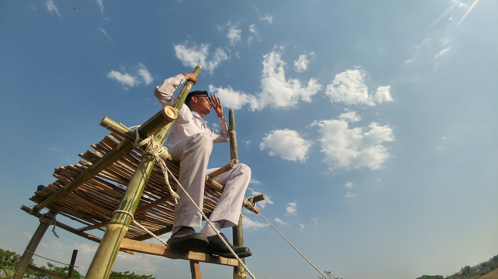

Perkenalkan saya hanya manusia biasa yang sedang menempuh kuliah di jurusan informatika dan kebetulan sedang mendalami bidang percodingan duniawi yang cukup memeras otak. Saya juga memiliki minat dibidang musik, saya bisa memainkan alat musik modern yaitu drum dan juga saya bisa memainkan alat musik tradisional gamelan jawa yaitu saron. Saya biasanya menghabiskan waktu senggang dengan menonton anime, mungkin sudah lebih dari 100 judul anime series maupun movie yang sudah saya tonton hehe. Untuk lebih lengkap tentang saya dapat dilihat dipart bawah.
Riwayat Pendidikan
SD
SDN 3 Bojonegoro (2008 - 2014)
SMP
SMP Negeri 3 Bojonegoro (2014 - 2017)
SMA
SMA Negeri 2 Bojonegoro (2017 - 2020)
KULIAH
UPN Veteran Jawa Timur (2020 - Sekarang)
Album

3 Anime Favorit
Release date : 05 April 2009
Fullmetal Alchemist: Brotherhood
Anime ini merupakan anime dengan rating tertinggi di MyAnimeList, ceritanya sangat kompleks ada romance, action, comedy, drama yang membuat anime ini layak menyandang anime terbaik sejauh ini
Vote :
Release date : 03 Mei 2017
Koe no Katachi
Anime ini merupakan anime tipe movie yang ceritanya sangat anti mainstream karena sang heroine memiliki penyakit tuna rungu dan tuna wicara yang memperjuangkan cintanya dengan lelaki normal
Vote :
Release date : 06 April 2017
Tsuki ga Kirei
Anime ini adalah anime dengan cerita yang sangat ringan yaitu menceritakan cerita cinta sepasang kekasih anak SMP yang masih malu-malu, anime ini sanggup membuat penonton ikut malu-malu juga